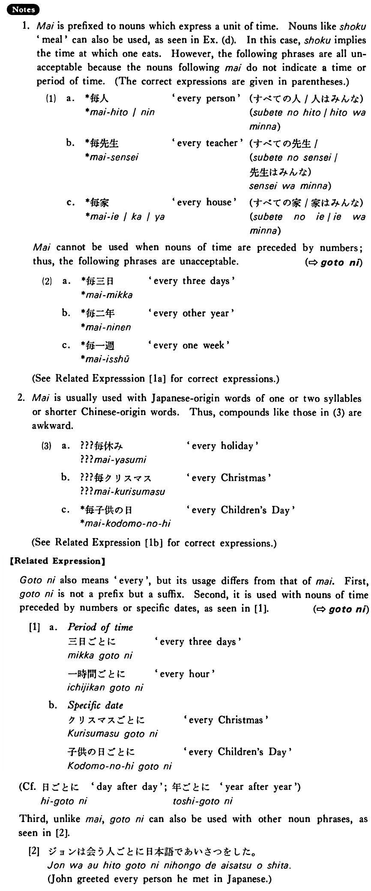

毎・まい (B. 233)
- (ks).
- 私は毎日一マイル泳ぐ・泳ぎます。
- I swim one mile every day.
- (a).
- 弘は毎晩道子に電話しているそうだ。
- I heard that Hiroshi calls Michiko every evening.
- (b).
- 台風は毎時二十キロの速さで北に進んでいる。
- The typhoon is moving north at a speed of twenty kilometers per hour.
- (c).
- 私は毎年一度は日本へ行く。
- I go to Japan at least once every year.
- (d).
- ジーンは毎食サラダを食べる。
- Jean eats salad at every meal.
